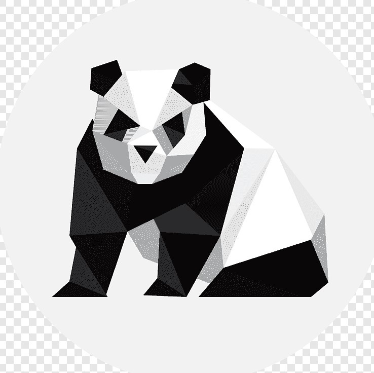

Origami Instructions and Diagrams
Step by Step diagrams are the most popular and easiest to follow way to
show how to fold things out of paper.
Typing to find good origami instructions on the Inernet can be a lot of work though. To
help your search we've put together a database of free origami diagrams
below :)
Camel

- Camels can travel at up to 40 miles per hour – the same as a racehorse!
- There are two types of camels: One humped or “dromedary” camels and two humped Bactrian camels.
- Camels have three sets of eyelids and two rows of eyelashes to keep sand out of their eyes.

Panda
- Giant pandas are good at climbing trees and can also swim
- Pandas go from pink to white and black (or brown)
- An adult can eat 12–38 kilos of bamboo per day!